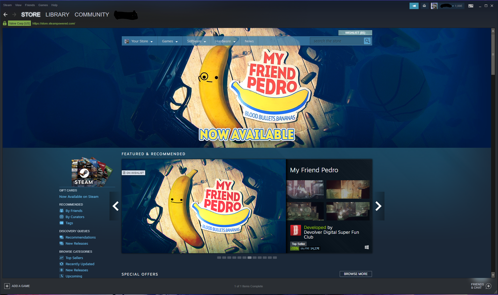

The Steam Launcher
Steam is a launcher run by Valve which is a game studio run by Gabe Newell, but is focused on making money to sell games from other studios. So far, they have rarely developed games. The latest project was Artifact. Steam does not only launch the games; it also provides a shop, a market, a community page, friendslist, and mod support.
backThe Store
The Steam Store is basically nothing else but a online store where you can buy games. Sometimes there will be a discound on your games like in normal stores and they also have a summer and a winter sale which is the cheapest way to get games nowadays. With discounds going up to -90% and with some actions where you even get games for free! With that the team store sets new standarts as a gaming launcher. You can search for games by genres or by price or if you want to risk something you can try a free to play game.
 The Library
what you see in the picture above is the Steam library. This library shows you which games you own, how long you played them, if friends are playing now, if friends have this game too, your latest achievements, workshop links, the newest updates and so on. You can sort your games by your own tags like you see on the left. It also has the feature to add games which are normally not in the steam store. Or which you baught physically.
The Market Place
The ingame loot in games might not be the biggest deal for some people but one mans trash is anothe mans treasure. So Steam made it possible to not only trade item for item, they even made it possible to trade ingame loot for real money. But this feature is only provided by steam the real worth is made by the players and the rarity of the items. If someone wants a item for a cheap price he can make offers someone can take if he owns the item. And people who want to sell the item cann set a price at which they will be willing to sell their goods. The problem is not on the market place, its on the trading option. You can trade items with friends and strangers but sometimes people will try to scam others for their precious loot. It already happend very often. But this kind of scam is not possible on the market place because you can't haggle with the owner who wants to sell.
The Community
The Workshop is where you can try out community made objects, skins, missons, etc. Everyone can post their creation in the workshop. It's very easy. You can not only post your ingame creation on steam, you can also make some guides which will help new players, or you can show off your funny or amazing screenshots you made while playing the games. Even artwork is appreciated.
Your Profile
You can customize your profile the way you want and show off how many games you have, how many hours you spend on games or if you just liked a game. You also can join different groups with strangers or firends and make your own little community.The Friend List
In the frineds list you can chat with your friends, see what they are playing or if they are afk.